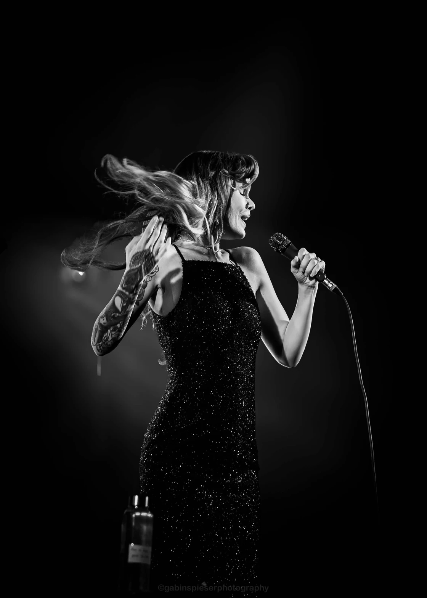

Sur ordinateur, survolez la photo ou placez le focus dessus pour lire sa légende. Sur écran tactile, touchez la photo pour la révéler, puis utilisez Agrandir. Les liens des artistes s’ouvrent dans un nouvel onglet.
Votre univers / Portrait d’artiste
Portrait d’artiste.
Votre signature.
Votre image doit parler avant même que l’on appuie sur « play ».
Portrait d’artiste, affiche, single ou pochette : je crée avec vous des visuels pensés pour représenter votre projet.
Musicien, chanteur ou groupe : nous préparons votre séance autour de votre univers et des supports auxquels les images sont destinées. Je suis basé à Châlons-en-Champagne, avec des déplacements dans le Grand Est et en Belgique.
Parlons de votre imageUn projet.
Une présence.
Une image pour annoncer un single, accompagner une sortie ou représenter votre projet auprès de la presse. Le point de départ, c’est ce que vous voulez transmettre.
Le lieu, la date, l’intention et les supports se préparent ensemble. Votre pochette, votre affiche et vos réseaux n’ont pas nécessairement les mêmes contraintes : indiquez les formats attendus et votre calendrier dès notre premier échange.
Vous pouvez découvrir mon regard sur les personnes photographiées dans le portfolio, puis me parler des images dont votre projet a besoin.
Portrait & communication
L’Image Signature
- À partir de
- 700 €
- Photographies finalisées
- 30
- Galerie privée
- 1 an
- Livraison prévue
- 7 jours
La formule prévoit des droits étendus pour votre projet : communication, réseaux sociaux, presse locale, supports imprimés, affichage et usages commerciaux liés au projet. Leur périmètre et l’exclusivité liée au projet sont définis ensemble dans le devis.
Voir le détail de la formule ->Le regard, d’abord.
Les photographies présentées ici sont des portraits réalisés en concert. Elles montrent mon regard sur les artistes ; votre séance se prépare autour de votre projet.


Ina Forsman
10
Choriste d’Anna Winkin
Wavre · Place aux Artistes · 21 août 2026
07Préparer
votre séance.
Présentez-moi votre projet musical, vos références, les supports prévus et votre date de publication. Nous préciserons ensuite le lieu, les besoins et le calendrier dans votre devis.
Vous préparez également un concert ou une tournée ? Le reportage de concert et de festival permet de compléter votre univers avec des images prises sur scène.
Avant la séance
Peut-on préparer une affiche ou une pochette ?
Oui. Précisez les supports, leurs formats et les usages prévus afin que la séance et les droits d’utilisation soient adaptés à votre projet.
Comment connaître le prix final ?
L’Image Signature commence à 700 €. Le périmètre de la séance, les déplacements et les usages des images sont définis dans le devis avant votre engagement.
Quels fichiers sont livrés ?
La formule comprend 30 photographies finalisées et une galerie privée pendant un an. Les fichiers RAW ne sont pas livrés, sauf accord spécifique.
Votre univers.
On en parle ?
Une intention, une sortie, une envie d’image : racontez-moi votre projet.